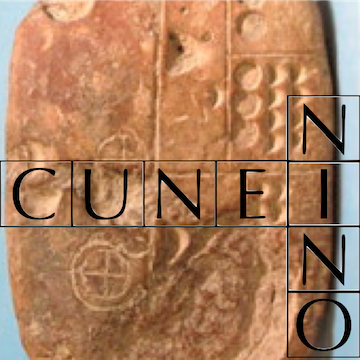

Cases¶
Cases are the building blocks on the faces of tablets.
What about the distribution of signs in deeply nested cases versus outer cases? We show here how you can begin to investigate that.
%load_ext autoreload
%autoreload 2
import sys, os
import collections
from IPython.display import display, Markdown
from tf.app import use
A = use('uruk:clone', checkout="clone", hoist=globals())
# A = use('uruk', hoist=globals())
Data: URUK, Character table, Feature docs
Features:
search¶
You might want to read the docs or the tutorial chapter on search first.
Here is a quick recap.
Explanation¶
The search template is basically
line
case
case
sign
This bare template looks for a sign within a case within a case within a line. Indententation acts as shorthand for embedding.
But this is not enough, because a subsubcase of a case is also embedded in that case. We look for a situation where the first case is directly embedded in the line, and the second case is directly embedded in the first case.
In our data we have an edge (relationship), called sub, that connects lines/cases with
cases that are directly embedded in them.
So
c0 -sub> c1
means that c0 is sub-related to c1.
Now it is possible to see that the result of this query will have signs that occur in subcases of cases of lines.
The Cunei API provides a function to collect (sub)cases at a given level of nesting.
We show how to use them, and for each task we show how you can get things done easier with search.
Level 0¶
If we do casesByLevel(0, terminal=False) we get all lines.
If we do casesByLevel(0), we get precisely the undivided lines.
test0Cases = set(A.casesByLevel(0, terminal=False))
allLines = set(F.otype.s('line'))
types0 = {F.otype.v(n) for n in test0Cases}
print(f'test0Cases: {len(test0Cases):>5}')
print(f'allLines : {len(allLines):>5}')
print(f'test0Cases equal to allLines: {test0Cases == allLines}')
print(f'types of test0Cases: {types0}')
test0CasesT = set(A.casesByLevel(0))
print(f'test0CasesT: {len(test0CasesT):>5}')
print(f'Divided lines: {len(test0Cases) - len(test0CasesT):>5}')
test0Cases: 35842
allLines : 35842
test0Cases equal to allLines: True
types of test0Cases: {'line'}
test0CasesT: 32732
Divided lines: 3110
Let us compare this with doing the same by means of search.
All lines
query = '''
line
'''
results = A.search(query)
0.03s 35842 results
Undivided lines
query = '''
line terminal
'''
results = A.search(query)
0.05s 32732 results
Divided lines
query = '''
line terminal#
'''
results = A.search(query)
0.02s 3110 results
Level 1¶
If we do casesByLevel(1, terminal=False) we get all cases (not lines) that are the first subdivision of a line.
If we do casesByLevel(1), we get a subset of these cases, namely the ones that are not themselves subdivided.
test1Cases = set(A.casesByLevel(1, terminal=False))
types1 = {F.otype.v(n) for n in test1Cases}
print(f'test1Cases: {len(test1Cases):>5}')
print(f'types of test1Cases: {types1}')
test1CasesT = set(A.casesByLevel(1))
print(f'test1CasesT: {len(test1CasesT):>5}')
print(f'Divided cases: {len(test1Cases) - len(test1CasesT):>5}')
test1Cases: 6559
types of test1Cases: {'case'}
test1CasesT: 5468
Divided cases: 1091
Or, by query:
Top-level cases
query = '''
case depth=1
'''
results = A.search(query)
0.01s 6559 results
Undivided top-level cases
query = '''
case depth=1 terminal
'''
results = A.search(query)
0.02s 5468 results
Divided top-level cases
query = '''
case depth=1 terminal#
'''
results = A.search(query)
0.01s 1091 results
Example tablet¶
Here we show by means of an example tablet the difference between terminal=False and
terminal=True when calling A.casesByLevel
We’ll use an example tablet P471695.
examplePnum = 'P471695'
exampleTablet = T.nodeFromSection((examplePnum,))
A.getSource(exampleTablet)
A.pretty(exampleTablet)
.jpg)
.jpg)
.jpg)


.jpg)


Above we have selected all cases of level 1 from the whole corpus, and constructed two sets:
terminal cases of level 1;
all cases of level 1. Now we take the intersection of these sets with the cases of the example tablet.
exampleCases = (
set(L.d(exampleTablet, otype='case'))
|
set(L.d(exampleTablet, otype='line'))
)
example2 = test1Cases & exampleCases
example2T = test1CasesT & exampleCases
print(f'\n{"-" * 48}\n'.join('\n'.join(A.getSource(c)) for c in sorted(example2)))
1.a. 3(N01) , APIN~a 3(N57) UR4~a
------------------------------------------------
1.b1. , (EN~a DU ZATU759)a
1.b2. , (BAN~b KASZ~c)a
1.b3. , (KI@n SAG)a
------------------------------------------------
2.a. 1(N14) 2(N01) , [...]
------------------------------------------------
2.b1. , (3(N57) PAP~a)a
2.b2. , (SZU KI X)a
$ n lines broken
2.b3'. , (EN~a AN EZINU~d)a
2.b4'. , (IDIGNA [...])a
$ rest broken
$ (for a total of 12 sub-cases with PNN)
------------------------------------------------
1.a. 1(N01) , ISZ~a#?
------------------------------------------------
1.b1. , (PAP~a GIR3~c)a
$ blank space
$ rest broken
print(f'\n{"-" * 48}\n'.join('\n'.join(A.getSource(c)) for c in sorted(example2T)))
1.a. 3(N01) , APIN~a 3(N57) UR4~a
------------------------------------------------
2.a. 1(N14) 2(N01) , [...]
------------------------------------------------
1.a. 1(N01) , ISZ~a#?
We can also show it with plain().
for c in sorted(example2):
A.plain(c)
for c in sorted(example2T):
A.plain(c)
We can also show it with pretty().
for c in sorted(example2):
A.pretty(c, showGraphics=False)
for c in sorted(example2T):
A.pretty(c, showGraphics=False)
What about case 1.b?
It is a case at level 2.
Why isn’t is in example2T?
Yes, but it is not a terminal case. It has subcases.
That is why 1.b is left out.
The parameter terminal specifies that only cases without children will be in the result.
Level 2¶
What if we want all signs that occur in a subcase, i.e. a case at level 2?
We can call casesByLevel(2, terminal=False), iterate through the resulting cases, and
collect all signs per case.
However, we will encounter signs multiple times.
Because if a sign is in a subcase, it is also in its containing case and in its containing line.
We can solve this by collecting the signs in a set.
Then we loose the corpus order of the signs, but we can easily reorder the set into a list.
There is an alternative method: a search template. Search delivers unordered results, so we will reorder the search results as well.
Text-Fabric has an API function for sorting nodes into corpus order: sortNodes.
Let us try out both methods and compare the outcomes.
casesByLevel¶
cases = A.casesByLevel(2, terminal=False)
signSet = set()
for case in cases:
signSet |= set(L.d(case, otype='sign'))
signsA = N.sortNodes(signSet)
len(signsA)
7738
or, by query:
query = '''
case depth=2
sign
'''
results = A.search(query)
0.11s 7738 results
or by a query not using the depth feature:
query = '''
line
-sub> case
-sub> case
sign
'''
results = A.search(query)
signsB = N.sortNodes(r[3] for r in results)
0.14s 7738 results
A bit about results.
The query mentions four quantities: line, case, case, sign.
Every result of the query is an instantiation of those 4 quantities, hence a tuple of nodes:
(resultLine, resultCase1, resultCase2, resultSign)
See the table view:
A.table(results, end=10)
| n | p | line | case | case | sign |
|---|---|---|---|---|---|
| 1 | P471695 obverse:1:1 | 1a3(N01) .jpg) APIN~a APIN~a  3(N57) UR4~a 3(N57) UR4~a  1b1b1(EN~a DU ZATU759)a 1b2(BAN~b KASZ~c)a 1b3(KI@n SAG)a 1b1b1(EN~a DU ZATU759)a 1b2(BAN~b KASZ~c)a 1b3(KI@n SAG)a | 1b1b1(EN~a DU ZATU759)a 1b2(BAN~b KASZ~c)a 1b3(KI@n SAG)a | 1b1(EN~a DU ZATU759)a | EN~a |
| 2 | P471695 obverse:1:1 | 1a3(N01) APIN~a 3(N57) UR4~a 1b1b1(EN~a DU ZATU759)a 1b2(BAN~b KASZ~c)a 1b3(KI@n SAG)a | 1b1b1(EN~a DU ZATU759)a 1b2(BAN~b KASZ~c)a 1b3(KI@n SAG)a | 1b1(EN~a DU ZATU759)a | DU  |
| 3 | P471695 obverse:1:1 | 1a3(N01) APIN~a 3(N57) UR4~a 1b1b1(EN~a DU ZATU759)a 1b2(BAN~b KASZ~c)a 1b3(KI@n SAG)a | 1b1b1(EN~a DU ZATU759)a 1b2(BAN~b KASZ~c)a 1b3(KI@n SAG)a | 1b1(EN~a DU ZATU759)a | ZATU759  |
| 4 | P471695 obverse:1:1 | 1a3(N01) APIN~a 3(N57) UR4~a 1b1b1(EN~a DU ZATU759)a 1b2(BAN~b KASZ~c)a 1b3(KI@n SAG)a | 1b1b1(EN~a DU ZATU759)a 1b2(BAN~b KASZ~c)a 1b3(KI@n SAG)a | 1b2(BAN~b KASZ~c)a | BAN~b |
| 5 | P471695 obverse:1:1 | 1a3(N01) APIN~a 3(N57) UR4~a 1b1b1(EN~a DU ZATU759)a 1b2(BAN~b KASZ~c)a 1b3(KI@n SAG)a | 1b1b1(EN~a DU ZATU759)a 1b2(BAN~b KASZ~c)a 1b3(KI@n SAG)a | 1b2(BAN~b KASZ~c)a | KASZ~c  |
| 6 | P471695 obverse:1:1 | 1a3(N01) APIN~a 3(N57) UR4~a 1b1b1(EN~a DU ZATU759)a 1b2(BAN~b KASZ~c)a 1b3(KI@n SAG)a | 1b1b1(EN~a DU ZATU759)a 1b2(BAN~b KASZ~c)a 1b3(KI@n SAG)a | 1b3(KI@n SAG)a | KI@n  |
| 7 | P471695 obverse:1:1 | 1a3(N01) APIN~a 3(N57) UR4~a 1b1b1(EN~a DU ZATU759)a 1b2(BAN~b KASZ~c)a 1b3(KI@n SAG)a | 1b1b1(EN~a DU ZATU759)a 1b2(BAN~b KASZ~c)a 1b3(KI@n SAG)a | 1b3(KI@n SAG)a | SAG  |
| 8 | P471695 obverse:1:2 | 2a1(N14) 2(N01) [...] 2b2b1(3(N57) PAP~a)a 2b2 (SZU KI X)a 2b3'(EN~a AN EZINU~d)a 2b4' (IDIGNA [...])a | 2b2b1(3(N57) PAP~a)a 2b2 (SZU KI X)a 2b3'(EN~a AN EZINU~d)a 2b4' (IDIGNA [...])a | 2b1(3(N57) PAP~a)a | 3(N57) |
| 9 | P471695 obverse:1:2 | 2a1(N14) 2(N01) [...] 2b2b1(3(N57) PAP~a)a 2b2 (SZU KI X)a 2b3'(EN~a AN EZINU~d)a 2b4' (IDIGNA [...])a | 2b2b1(3(N57) PAP~a)a 2b2 (SZU KI X)a 2b3'(EN~a AN EZINU~d)a 2b4' (IDIGNA [...])a | 2b1(3(N57) PAP~a)a | PAP~a |
| 10 | P471695 obverse:1:2 | 2a1(N14) 2(N01) [...] 2b2b1(3(N57) PAP~a)a 2b2 (SZU KI X)a 2b3'(EN~a AN EZINU~d)a 2b4' (IDIGNA [...])a | 2b2b1(3(N57) PAP~a)a 2b2 (SZU KI X)a 2b3'(EN~a AN EZINU~d)a 2b4' (IDIGNA [...])a | 2b2 (SZU KI X)a |
For our purposes we are only interested in the resultSign part, so we select it by the
r[3] when we walk through all results r.
Check¶
Both methods yield the same number of results, but are they exactly the same results?
signsA == signsB
True
Yes!
Twist¶
Now we want to restrict ourselves to non-numerical signs.
If you look at the feature docs (see the link at the start of the notebook),
and read about the type feature for signs, you see that it can have the values
empty unknown numeral ideograph.
F.type.freqList()
(('ideograph', 53249),
('numeral', 38122),
('uncertain', 32116),
('ellipsis', 29413),
('empty', 12440),
('unknown', 6870),
('meta', 6630),
('obverse', 5959),
('ruling', 4057),
('reverse', 3044),
('properName', 636),
('surface', 408),
('object', 403),
('seal', 21),
('bottom', 17),
('top', 3),
('left', 2),
('noface', 2),
('supplied', 1))
Ah, the feature type is also used for other things than signs.
We just want a frequency list of type values for signs:
F.type.freqList({'sign'})
(('ideograph', 53249),
('numeral', 38122),
('ellipsis', 29413),
('empty', 12440),
('unknown', 6870))
We just want the ideographs.
We’ll adapt both methods to get them and ignore the numerals and lesser defined graphemes.
Of course, we can just filter the result list that we have already got, but this is a tutorial, and it may come in handy to have a well stocked repertoire of direct ways to drill to your data.
casesByLevel¶
cases = A.casesByLevel(2, terminal=False)
signSet = set()
for case in cases:
signSet |= set(s for s in L.d(case, otype='sign') if F.type.v(s) == 'ideograph')
signsA = N.sortNodes(signSet)
len(signsA)
3813
search¶
Note that it is very easy to add the desired condition to the template.
This method is much easier to adapt than the first method!
query = '''
case depth=2
sign type=ideograph
'''
results = A.search(query)
signsB = N.sortNodes(r[1] for r in results)
0.17s 3813 results
signsA == signsB
True
Supercase versus subcase¶
We finish of with a comparison of the frequencies of signs that occur on lines and level-1 cases, and the frequencies of signs that occur on level-2 and deeper cases.
From both groups we pick the top-20. We make a nice markdown table showing the frequencies those top-20 signs in both groups.
We do this for non-numeric ideographs only.
Note that we have already collected the group of the subcases and deeper: signsB.
We give this sequence an other name: subSigns.
subSigns = signsB
len(subSigns)
3813
We need to collect the group of signs in lines and immediate cases. So we have to exclude cases that are subdivided in subcases.
For that, we use the feature terminal, which exists and is equal to 1 for undivided
cases and lines, and which does not exist for divided cases and lines.
We get this group by two queries.
query0 = '''
line terminal=1
sign type=ideograph
'''
signs0 = [r[1] for r in A.search(query0)]
0.28s 41788 results
query1 = '''
line
-sub> case terminal=1
sign type=ideograph
'''
signs1 = [r[2] for r in A.search(query1)]
0.21s 7648 results
Let us collect both results into superSigns.
Note that signs0 and signs1 have no occurrences in common:
a sign in signs1 is part of a case, so the line that contains that case is divided,
so it has no value for theterminal feature, so ot is not in the results of query0.
superSigns = signs0 + signs1
Also note that superSigns and subSigns have nothing in common, for the same kind of reasoning as why signs0 and signs1 have no occurrences in common.
That said, reasoning is one thing, and using data to verify assertions is another thing. Let us just check!
set(signs0) & set(signs1)
set()
set(subSigns) & set(superSigns)
set()
Check!
Last, but not least, we want to compare the frequencies of the super and sub groups with the overall frequencies.
queryA = '''
line
sign type=ideograph
'''
allSigns = [r[1] for r in A.search(queryA)]
0.29s 53249 results
Frequency and rank¶
We are going to make a frequency distribution for both groups. We do not want to repeat ourselves DRY, so we write a function that given a list of items, produces a frequency list.
While we’re at it, we also produce a ranking list: the most frequent item has rank 1, the second frequent item has rank 2, and so on.
When we compute the frequencies, we count the number of times a sign, identified by its ATF transcription (without flags), occurs.
def getFreqs(items):
freqs = collections.Counter()
for item in items:
freqs[A.atfFromSign(item)] += 1
ranks = {}
for item in sorted(freqs, key=lambda i: -freqs[i]):
ranks[item] = len(ranks) + 1
return (freqs, ranks)
(allFreqs, allRanks) = getFreqs(allSigns)
(superFreqs, superRanks) = getFreqs(superSigns)
(subFreqs, subRanks) = getFreqs(subSigns)
Now we want the top scorers in the super and sub teams. We make it customisable whether you want the top-20 or top-100, or whatever.
def getTop(ranks, amount):
return sorted(ranks, key=lambda i: ranks[i])[0:amount]
AMOUNT = 20
superTop = getTop(superRanks, AMOUNT)
subTop = getTop(subRanks, AMOUNT)
We combine the two tops without duplication …
combiTopSet = set(superTop) | set(subTop)
… and sort them by overall rank:
combiTop = sorted(combiTopSet, key=lambda i: allRanks[i])
Since we have now our top characters ready, let us just show them. We group them into horizontal lines.
def chunk(items, chunkSize):
chunks = [[]]
j = 0
for item in items:
if j == chunkSize:
chunks.append([])
j = 0
chunks[-1].append(item)
j += 1
return chunks
for batch in chunk(combiTop, 4):
display(Markdown('\n\n---\n\n'))
A.lineart(batch, height=80, width=60)


{kind=link}
We can now compose our table.
For each sign we make a row in which we report the frequency and rank of that sign in all groups.
table = f'''
**Frequencies and ranks of non-numeral signs**
sign | all F | all R | super F | super R | sub F | sub R
--- | --- | --- | --- | --- | --- | ---
'''
for sign in combiTop:
allF = allFreqs[sign]
allR = allRanks[sign]
superF = superFreqs.get(sign, ' ')
superR = superRanks.get(sign, ' ')
subF = subFreqs.get(sign, ' ')
subR = subRanks.get(sign, ' ')
row = f'**{sign}** | **{allF}** | **{allR}** | {superF} | *{superR}* | {subF} | *{subR}*'
table += f'{row}\n'
display(Markdown(table))
Frequencies and ranks of non-numeral signs
sign | all F | all R | super F | super R | sub F | sub R --- | --- | --- | --- | --- | --- | --- EN~a | 1830 | 1 | 1670 | 1 | 160 | 1 SZE~a | 1294 | 2 | 1178 | 2 | 116 | 2 GAL~a | 1164 | 3 | 1136 | 3 | 28 | 30 U4 | 1022 | 4 | 936 | 5 | 86 | 7 AN | 1020 | 5 | 946 | 4 | 74 | 9 SAL | 876 | 6 | 795 | 6 | 81 | 8 PAP~a | 851 | 7 | 765 | 7 | 86 | 6 GI | 849 | 8 | 754 | 8 | 95 | 4 BA | 781 | 9 | 679 | 10 | 102 | 3 NUN~a | 719 | 10 | 677 | 11 | 42 | 20 SANGA~a | 714 | 11 | 698 | 9 | 16 | 60 SZU | 680 | 12 | 611 | 13 | 69 | 10 BU~a | 653 | 13 | 561 | 16 | 92 | 5 NAM2 | 649 | 14 | 625 | 12 | 24 | 39 E2~a | 646 | 15 | 583 | 14 | 63 | 11 UDU~a | 616 | 16 | 574 | 15 | 42 | 19 A | 600 | 17 | 557 | 17 | 43 | 18 KI | 546 | 18 | 503 | 19 | 43 | 17 DUG~b | 509 | 19 | 506 | 18 | 3 | 226 DU | 480 | 20 | 435 | 22 | 45 | 14 GISZ | 478 | 21 | 461 | 20 | 17 | 57 HI | 408 | 29 | 363 | 31 | 45 | 15 TUR | 382 | 32 | 330 | 36 | 52 | 12 KU3~a | 264 | 52 | 220 | 58 | 44 | 16 HI@g~a | 235 | 58 | 186 | 67 | 49 | 13